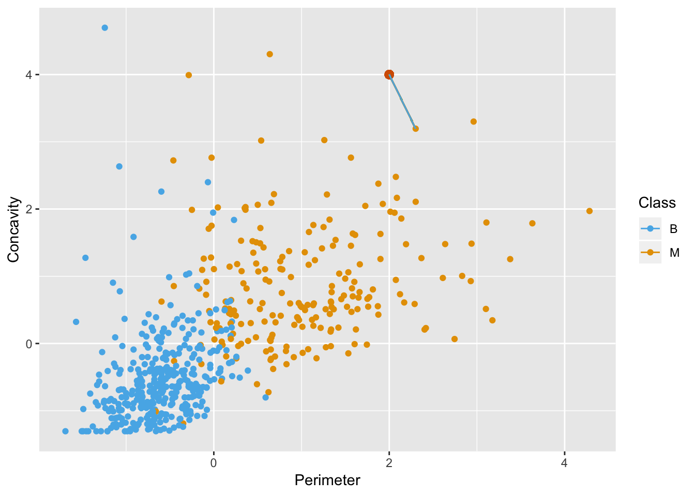
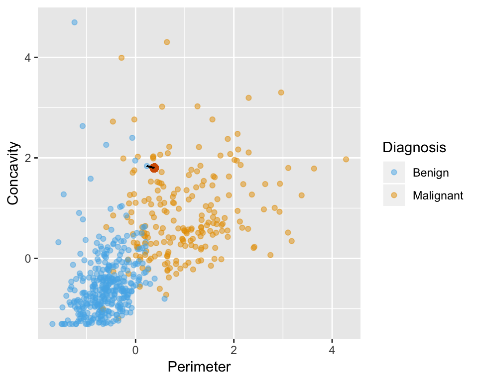

Chapter 7 Classification continued
7.1 Overview
Metrics for classification accuracy; cross-validation to choose the number of neighbours; scaling of variables and other practical considerations.
7.2 Learning objectives
By the end of the chapter, students will be able to:
- Describe what a validation data set is and how it is used in classification.
- Using R, evaluate classification accuracy using a validation data set and appropriate metrics.
- Using R, execute cross-validation in R to choose the number of neighbours.
- Identify when it is necessary to scale variables before classification and do this using R
- In a dataset with > 2 attributes, perform k-nearest neighbour classification in R using
caret::train(method = "knn", ...)to predict the class of a test dataset. - Describe advantages and disadvantages of the k-nearest neighbour classification algorithm.
7.3 Assessing how good your classifier is
Sometimes our classifier might make the wrong prediction. A classifier does not need to be right 100% of the time to be useful, though we don’t want the classifier to make too many wrong predictions. How do we measure how “good” our classifier?
One way to assess our classifier’s performance can be done by splitting our data into a training set and a validation set. When we split the data, we make the assumption that there is no order to our originally collected data set. However, if we think that there might be some order to the original data set, then we can randomly shuffle the data before splitting it into a training and validation set.

The training set is used to build the classifer. Then we can give the observations from the validation set (without the labels/classes) to our classifier and predict the labels/classes as if these were new observations that we didn’t have the labels/classes for. Then we can see how well our predictions match the true labels/classes for the observations in the validation set. If our predictions match the true labels/classes for the observations in the validation set very well then we have some confidence that our classifier might also do a good job of predicting the class labels for new observations that we do not have the class labels for.
How exactly can we assess how well our predictions match the true labels/classes for the observations in the validation set? One way we can do this is to calculate the prediction accuracy. This is essentially the proportion of time the classifier was correct. To calculate this we divide the number of correct predictions by the number of predictions made. Other measures for how well our classifier did include precision and recall (which will not be discussed here, but are discussed in other more advanced courses on this topic).
We try to illustrate this below:

7.3.1 Assessing your classifier in R
We can use the caret package in R to not only perform k-nn classification, but also to assess how well our classification worked. Let’s start by loading the necessary libraries, data (we’ll continue exploring the breast cancer data set from last chapter) and making a quick scatter plot of tumour cell concavity versus smoothness, labelling the points be diagnosis class.
# load libraries
library(tidyverse)
library(caret)
#load data
cancer <- read_csv("data/clean-wdbc.data.csv") %>%
mutate(Class = as.factor(Class)) # because we will be doing statistical analysis on a categorical variable
# colour palette
cbPalette <- c("#56B4E9", "#E69F00","#009E73", "#F0E442", "#0072B2", "#D55E00", "#CC79A7", "#999999")
# create scatter plot of tumour cell concavity versus smoothness,
# labelling the points be diagnosis class
perim_concav <- cancer %>%
ggplot(aes(x = Smoothness, y = Concavity, color = Class)) +
geom_point(alpha = 0.5) +
labs(color = "Diagnosis") +
scale_color_manual(labels = c("Benign", "Malignant"), values = cbPalette)
perim_concav
7.3.1.1 Splitting into training and validation sets
Next, lets split our data into a training and a validation set using caret’s createDataPartition function. When using this function to split a data set into a training and validation set it takes 3 arguments:
y(the class labels, must be a vector),p(the proportion of the data you would like in the training data set), andlist = FALSE(says we want the data back as a matrix instead of a list).
The createDataPartition function returns the row numbers for the training set.
set.seed(1234) # makes the random selection of rows reproducible
set_rows <- cancer %>%
select(Class) %>%
unlist() %>% # converts Class from a tibble to a vector
createDataPartition(p = 0.75, list = FALSE)
head(set_rows)## Resample1
## [1,] 1
## [2,] 2
## [3,] 3
## [4,] 4
## [5,] 5
## [6,] 6You will also see in the code above that we use the set.seed function. This is because createDataPartition uses random sampling to choose which rows will be in the training set, and if we use set.seed to specify where the random number generator starts for this process then we can make our analysis reproducible (always get the same random set of observations in the training set).
Now that we have the row numbers for the training set, we can use the slice function to get the rows from the original data set (here cancer) to create the training set and the validation sets.
training_set <- cancer %>% slice(set_rows)
validation_set <- cancer %>% slice(-set_rows)
glimpse(training_set)## Observations: 427
## Variables: 12
## $ ID <int> 842302, 842517, 84300903, 84348301, 84358402...
## $ Class <fct> M, M, M, M, M, M, M, M, M, M, M, M, B, B, B,...
## $ Radius <dbl> 1.8850310, 1.8043398, 1.5105411, -0.2812170,...
## $ Texture <dbl> -1.35809849, -0.36887865, -0.02395331, 0.133...
## $ Perimeter <dbl> 2.30157548, 1.53377643, 1.34629062, -0.24971...
## $ Area <dbl> 1.99947816, 1.88882702, 1.45500430, -0.54953...
## $ Smoothness <dbl> 1.306536657, -0.375281748, 0.526943750, 3.39...
## $ Compactness <dbl> 2.61436466, -0.43006581, 1.08198014, 3.88997...
## $ Concavity <dbl> 2.10767182, -0.14661996, 0.85422232, 1.98783...
## $ Concave_points <dbl> 2.2940576, 1.0861286, 1.9532817, 2.1738732, ...
## $ Symmetry <dbl> 2.7482041, -0.2436753, 1.1512420, 6.0407261,...
## $ Fractal_dimension <dbl> 1.93531174, 0.28094279, 0.20121416, 4.930671...glimpse(validation_set)## Observations: 142
## Variables: 12
## $ ID <int> 84458202, 84501001, 84610002, 846226, 846381...
## $ Class <fct> M, M, M, M, M, M, M, M, M, M, M, M, M, M, B,...
## $ Radius <dbl> 0.16361901, -0.24397494, 0.85880462, 0.97053...
## $ Texture <dbl> 0.400695342, 2.440961268, 0.260772799, 0.693...
## $ Perimeter <dbl> 0.099361153, -0.286026354, 0.870136167, 1.32...
## $ Area <dbl> 0.028834057, -0.297147713, 0.734893708, 0.79...
## $ Smoothness <dbl> 1.4466882, 2.3182555, 0.3167164, -1.2556086,...
## $ Compactness <dbl> 0.7241483, 5.1083824, 1.9489119, 0.8646116, ...
## $ Concavity <dbl> -0.02103534, 3.99192038, 0.59586313, 0.43960...
## $ Concave_points <dbl> 0.62364699, 1.61859101, 1.01006256, 0.944645...
## $ Symmetry <dbl> 0.4772206, 2.3683599, 1.4405702, 0.4448934, ...
## $ Fractal_dimension <dbl> 1.72491676, 6.84083682, 1.15463563, 1.016217...We can see from glimpse in the code above that the training set contains 427 observations, while the validation set contains 142 observations. This corresponds to the training set having 75% of the observations from the original data set and the validation set having the other 40% of the observations. We specified this when we set p = 0.60 when we called createDataPartition.
7.3.1.2 Creating the k-nn classifier
Now that we have split our original data set into a training and validation set, we can create our k-nn classifier using the training set. We explained how to do this last chapter, so here we just do it! For the time being we will just choose a single \(k\) of 3, and use the predictors concavity and smoothness.
X_train <- training_set %>%
select(Concavity, Smoothness) %>%
data.frame()
Y_train <- training_set %>%
select(Class) %>%
unlist()
k = data.frame(k = 3)
model_knn <- train(x = X_train, y = Y_train, method = "knn", tuneGrid = k)
model_knn## k-Nearest Neighbors
##
## 427 samples
## 2 predictor
## 2 classes: 'B', 'M'
##
## No pre-processing
## Resampling: Bootstrapped (25 reps)
## Summary of sample sizes: 427, 427, 427, 427, 427, 427, ...
## Resampling results:
##
## Accuracy Kappa
## 0.8286472 0.6331781
##
## Tuning parameter 'k' was held constant at a value of 37.3.1.3 Predict class labels for the validation set
Now that we have a k-nn classifier object, we can use it to predict the class labels for our validation set:
X_validation <- validation_set %>%
select(Concavity, Smoothness) %>%
data.frame()
Y_validation_predicted <- predict(object = model_knn, X_validation)
head(Y_validation_predicted)## [1] B M M B B M
## Levels: B M7.3.1.4 Assessing our classifier’s accuracy
Finally we can assess our classifier’s accuracy. To do this we need to create vector containing the class labels for the validation set. Next we use the function confusionMatrix to get the statistics about the quality of our model, this includes the statistic we are interested: accuracy. confusionMatrix takes two arguments:
data(the predicted class labels for the validation set), andreference(the original/measured class labels for the validation set).
Y_validation <- validation_set %>%
select(Class) %>%
unlist()
model_quality <- confusionMatrix(data = Y_validation_predicted, reference = Y_validation)
model_quality## Confusion Matrix and Statistics
##
## Reference
## Prediction B M
## B 75 15
## M 14 38
##
## Accuracy : 0.7958
## 95% CI : (0.72, 0.8588)
## No Information Rate : 0.6268
## P-Value [Acc > NIR] : 1.068e-05
##
## Kappa : 0.5618
## Mcnemar's Test P-Value : 1
##
## Sensitivity : 0.8427
## Specificity : 0.7170
## Pos Pred Value : 0.8333
## Neg Pred Value : 0.7308
## Prevalence : 0.6268
## Detection Rate : 0.5282
## Detection Prevalence : 0.6338
## Balanced Accuracy : 0.7798
##
## 'Positive' Class : B
## A lot of information is output from confusionMatrix, but what we are interested in at this point is accuracy (found on the 6th line of printed output). That single value can be obtained from the confusionMatrix object using base/built-in R subsetting:
model_quality$overall[1]## Accuracy
## 0.7957746From a value of accuracy of 0.7957746, we can say that our k-nn classifier predicted the correct class label ~ 80% of the time.
7.4 Cross-validation for assessing classifier quality
Is that the best estimate of accuracy that we can get? What would happen if we again shuffled the observations in our training and validation sets, would we get the same accuracy? Let’s do and experiment and see. By changing the set.seed value, we can get a different shuffle of the data when we create our training and validation data sets.
Using set.seed(4321)
set.seed(4321) # makes the random selection of rows reproducible
set_rows <- cancer %>%
select(Class) %>%
unlist() %>% # converts Class from a tibble to a vector
createDataPartition(p = 0.75, list = FALSE)
training_set <- cancer %>% slice(set_rows)
validation_set <- cancer %>% slice(-set_rows)
X_train <- training_set %>%
select(Concavity, Smoothness) %>%
data.frame()
Y_train <- training_set %>%
select(Class) %>%
unlist()
k = data.frame(k = 3)
model_knn <- train(x = X_train, y = Y_train, method = "knn", tuneGrid = k)
X_validation <- validation_set %>%
select(Concavity, Smoothness) %>%
data.frame()
Y_validation_predicted <- predict(object = model_knn, X_validation)
Y_validation <- validation_set %>%
select(Class) %>%
unlist()
model_quality <- confusionMatrix(data = Y_validation_predicted, reference = Y_validation)
model_quality$overall[1]## Accuracy
## 0.8661972Using set.seed(8765)
set.seed(8765) # makes the random selection of rows reproducible
set_rows <- cancer %>%
select(Class) %>%
unlist() %>% # converts Class from a tibble to a vector
createDataPartition(p = 0.75, list = FALSE)
training_set <- cancer %>% slice(set_rows)
validation_set <- cancer %>% slice(-set_rows)
X_train <- training_set %>%
select(Concavity, Smoothness) %>%
data.frame()
Y_train <- training_set %>%
select(Class) %>%
unlist()
k = data.frame(k = 3)
model_knn <- train(x = X_train, y = Y_train, method = "knn", tuneGrid = k)
X_validation <- validation_set %>%
select(Concavity, Smoothness) %>%
data.frame()
Y_validation_predicted <- predict(object = model_knn, X_validation)
Y_validation <- validation_set %>%
select(Class) %>%
unlist()
model_quality <- confusionMatrix(data = Y_validation_predicted, reference = Y_validation)
model_quality$overall[1]## Accuracy
## 0.7676056When we have 3 different shuffles of the data, we get 3 different values for accuracy! 0.7957746, 0.8661972 and 0.7676056! Which one is correct? Sadly, there is no easy answer to that question. The best we can do is to do this many times and take the average of the accuracies. Typically this is done is a more structured way so that each observation in the data set is used in a validation set only a single time. The name for this strategy is called cross-validation and we illustrate it below:

In the picture above, 5 different folds/partitions of the data set are shown, and consequently we call this 5-fold cross-validation. To do 5-fold cross-validation in R with caret, we use another function called trainControl. This function passes additional information to the train function we use to create our classifier. The arguments we pass trainControl are:
method(method used for assessing classifier quality, here we specify"cv"for cross-validation)number(how many folds/partitions of the data set we want to use for cross validation)
set.seed(1234)
train_control <- trainControl(method="cv", number = 5)Then when we create our classifier we add an additional argument to train, called trControl where we give it the name of the object we created with the trainControl function. Additionally, we do not need to specify a training and a validation set because we are telling train that we are doing cross validation (it will take care creating the folds, calculating the accuracy for each fold and averaging the accuracies for us).
X_cancer <- cancer %>%
select(Concavity, Smoothness) %>%
data.frame()
Y_cancer <- cancer %>%
select(Class) %>%
unlist()
k = data.frame(k = 3)
knn_model_cv_5fold <- train(x = X_cancer, y = Y_cancer, method = "knn", tuneGrid = k, trControl = train_control)
knn_model_cv_5fold## k-Nearest Neighbors
##
## 569 samples
## 2 predictor
## 2 classes: 'B', 'M'
##
## No pre-processing
## Resampling: Cross-Validated (5 fold)
## Summary of sample sizes: 456, 455, 454, 455, 456
## Resampling results:
##
## Accuracy Kappa
## 0.8329714 0.6439188
##
## Tuning parameter 'k' was held constant at a value of 3We can choose any number of folds, typically the more the better. However we are limited by computational power. The more folds we choose, the computation it takes, and hence the more time it takes to run the analysis. So for each time you do cross-validation you need to consider the size of the data, and the speed of the algorithm (here k-nn) and the speed of your computer. In practice this is a trial and error process. Here we show what happens when we do 10 folds:
train_control <- trainControl(method="cv", number = 10)
knn_model_cv_10fold <- train(x = X_cancer, y = Y_cancer, method = "knn", tuneGrid = k, trControl = train_control)
knn_model_cv_10fold## k-Nearest Neighbors
##
## 569 samples
## 2 predictor
## 2 classes: 'B', 'M'
##
## No pre-processing
## Resampling: Cross-Validated (10 fold)
## Summary of sample sizes: 512, 512, 512, 512, 513, 512, ...
## Resampling results:
##
## Accuracy Kappa
## 0.8348274 0.6478331
##
## Tuning parameter 'k' was held constant at a value of 37.5 Choosing the number of neighbours for k-nn classification
From 5- and 10-fold cross-validate we estimate that the prediction accuracy of our classifier to be ~ 93%. This could be not too bad of an accuracy, however what accuracy you aim for always depends on the downstream application of your analysis. Here, we are trying to predict a very important outcome, tumour cell diagnosis class. And the class label we assign to a real patient may have life or death consequences. Hence, we’d like to do better for this application than 83%. To do this we can use cross-validation in an even bigger way, we can choose a range of possible \(k\)’s and perform cross-validation to calculate the accuracy for each \(k\), and then choose the smallest \(k\) which gives us the best cross-validation accuracy. To do this, we will create a vector of values for \(k\) instead of providing just 1.
train_control <- trainControl(method="cv", number = 10)
k = data.frame(k = c(1, 3, 5, 7, 9, 11, 13, 15, 17))
knn_model_cv_10fold <- train(x = X_cancer, y = Y_cancer, method = "knn", tuneGrid = k, trControl = train_control)
knn_model_cv_10fold## k-Nearest Neighbors
##
## 569 samples
## 2 predictor
## 2 classes: 'B', 'M'
##
## No pre-processing
## Resampling: Cross-Validated (10 fold)
## Summary of sample sizes: 512, 512, 512, 513, 512, 513, ...
## Resampling results across tuning parameters:
##
## k Accuracy Kappa
## 1 0.7963832 0.5670877
## 3 0.8314115 0.6404103
## 5 0.8506168 0.6801179
## 7 0.8487371 0.6769444
## 9 0.8487987 0.6767625
## 11 0.8487987 0.6792620
## 13 0.8523075 0.6864837
## 15 0.8506147 0.6832103
## 17 0.8453191 0.6723945
##
## Accuracy was used to select the optimal model using the largest value.
## The final value used for the model was k = 13.Then to help us choose \(k\) it is very useful to visualize the accuracies as we increase \(k\). This will help us choose the smallest \(k\) with the biggest accuracy. We can access the results from the cross-validation by accessing theresults attribute of the train object (our classifier).
accuracies <- knn_model_cv_10fold$results
accuracies ## k Accuracy Kappa AccuracySD KappaSD
## 1 1 0.7963832 0.5670877 0.05622999 0.12358847
## 2 3 0.8314115 0.6404103 0.04120719 0.08810393
## 3 5 0.8506168 0.6801179 0.03665860 0.07545675
## 4 7 0.8487371 0.6769444 0.04424770 0.08841509
## 5 9 0.8487987 0.6767625 0.04459822 0.09055035
## 6 11 0.8487987 0.6792620 0.04898351 0.09868306
## 7 13 0.8523075 0.6864837 0.04759324 0.09660905
## 8 15 0.8506147 0.6832103 0.05352744 0.10941241
## 9 17 0.8453191 0.6723945 0.05520681 0.11219591Now we can plot accuracy versus k:
accuracy_vs_k <- ggplot(accuracies, aes(x = k, y = Accuracy)) +
geom_point() +
geom_line()
accuracy_vs_k
Based off of the visualization above we typically would choose \(k\) to be 3 or 5, given that at this value of \(k\) our accuracy is a high as it can be with much larger values of \(k\). As you can see there is no exact or perfect answer here, what we are looking for is a value for \(k\) where we get a roughly optimal increase of accuracy but at the same time we want to keep \(k\) small.
Why do we want to keep \(k\) small? Well this is because if we keep increasing \(k\) our accuracy actually starts to decrease! Take a look as the plot below as we vary \(k\) from 1 to almost the number of observations in the data set:
train_control <- trainControl(method="cv", number = 10)
k = data.frame(k = seq(from = 1, to = 499, by = 10))
knn_model_cv_10fold <- train(x = X_cancer, y = Y_cancer, method = "knn", tuneGrid = k, trControl = train_control)
accuracies <- knn_model_cv_10fold$results
accuracy_vs_k <- ggplot(accuracies, aes(x = k, y = Accuracy)) +
geom_point() +
geom_line()
accuracy_vs_k